4 850 € impayés.
Et maintenant ?
Une facture arrive à échéance. Axe Flow transforme l’impayé en un dossier clair, suivi et actionnable — sans multiplier les tableaux, rappels et documents.
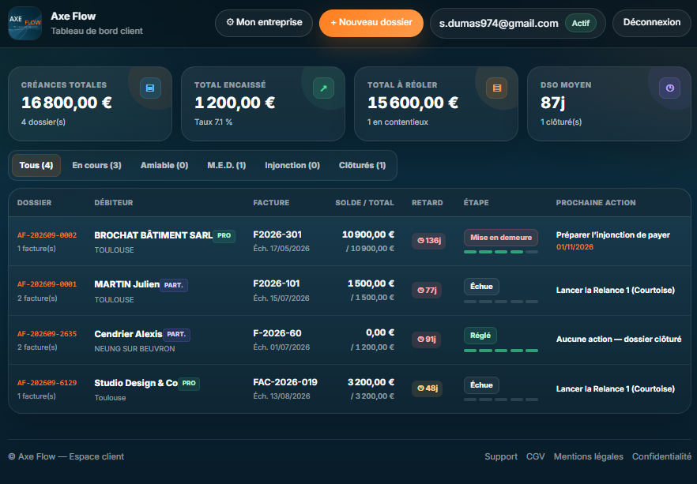
Une facture impayée.
Quelques informations.
Client, facture, échéance, montant : le dossier est lancé en quelques instants. Axe Flow organise ensuite le parcours.
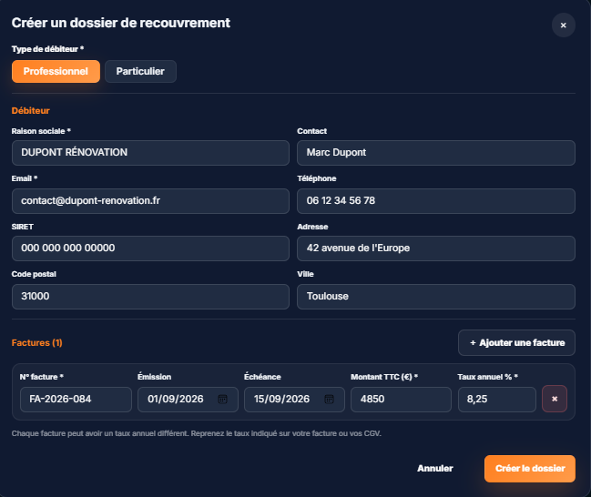
Le dossier est créé.
La prochaine action est déjà indiquée.
Montant dû, retard, historique et prochaine étape restent réunis. Plus besoin de se demander quoi faire ni quand le faire.
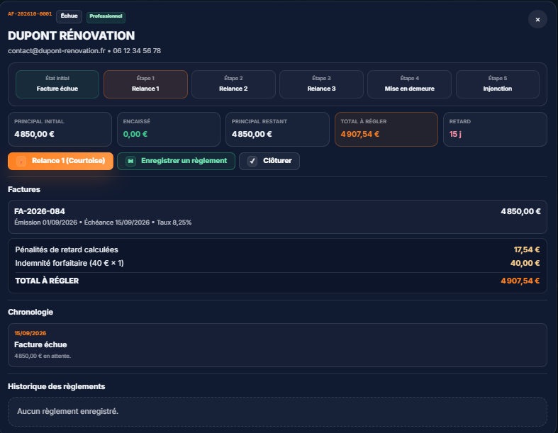
Axe Flow garde le rythme.
Vous gardez votre temps.
Après chaque action, la date suivante est calculée et conservée dans le dossier. Le dirigeant n’a rien à mémoriser ni à recalculer.
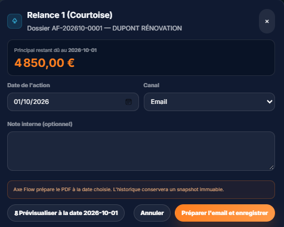
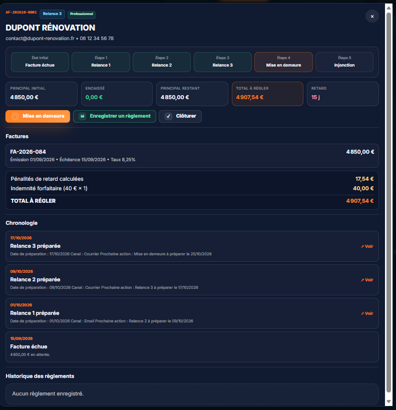
Quand relancer ne suffit plus,
le dossier continue d’avancer.
La mise en demeure est préparée avec les informations et montants actualisés. Le document est prêt à être vérifié puis envoyé.
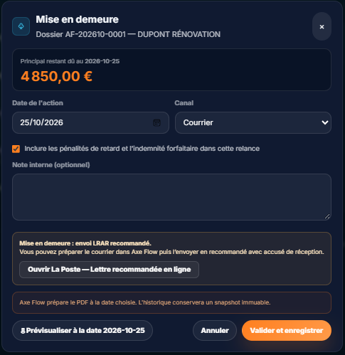
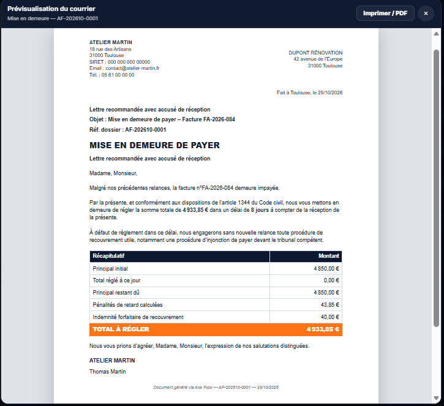
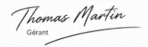
Si le dossier doit aller plus loin,
rien n’est à reconstruire.
Juridiction, requête, Cerfa prérempli et décompte actualisé sont préparés à partir du même dossier.
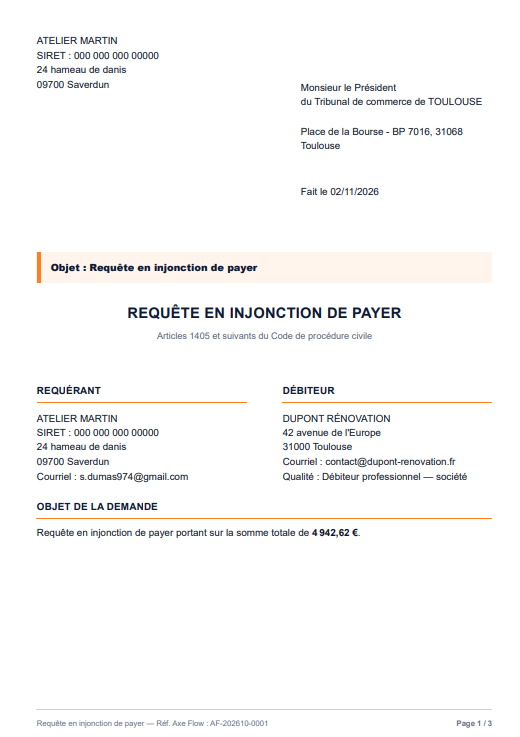
Requête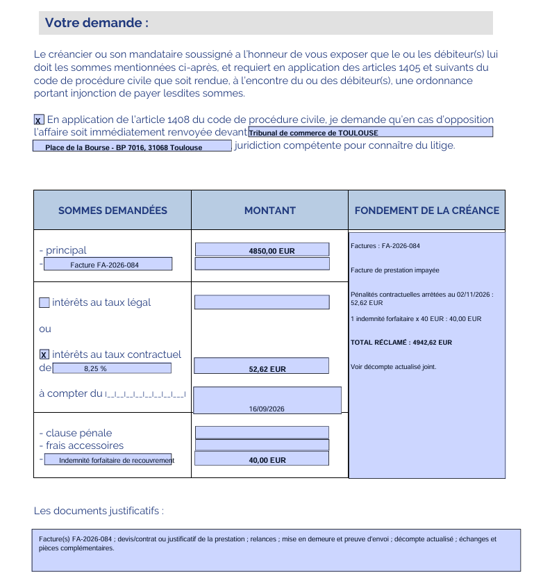
Cerfa prérempli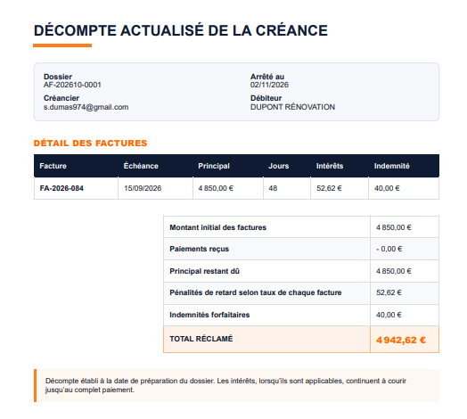
Décompte actualiséLes pièces sont réunies.
Le dossier complet est téléchargeable.
Relances et mise en demeure sont déjà présentes. Il reste à ajouter les justificatifs utiles — facture, devis, contrat, échanges — puis à récupérer le dossier complet.
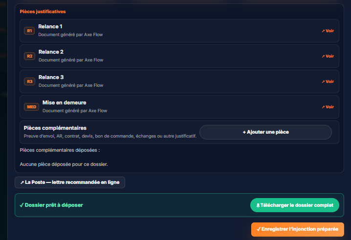
Le débiteur paie 1 500 €.
Axe Flow actualise le reste.
Avant validation, le principal affiché est encore de 4 850 €. Après enregistrement du paiement, Axe Flow met le dossier à jour automatiquement.
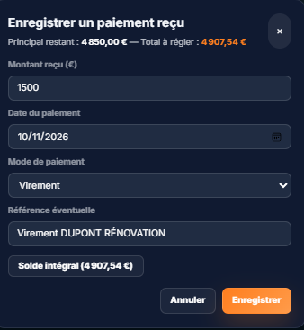
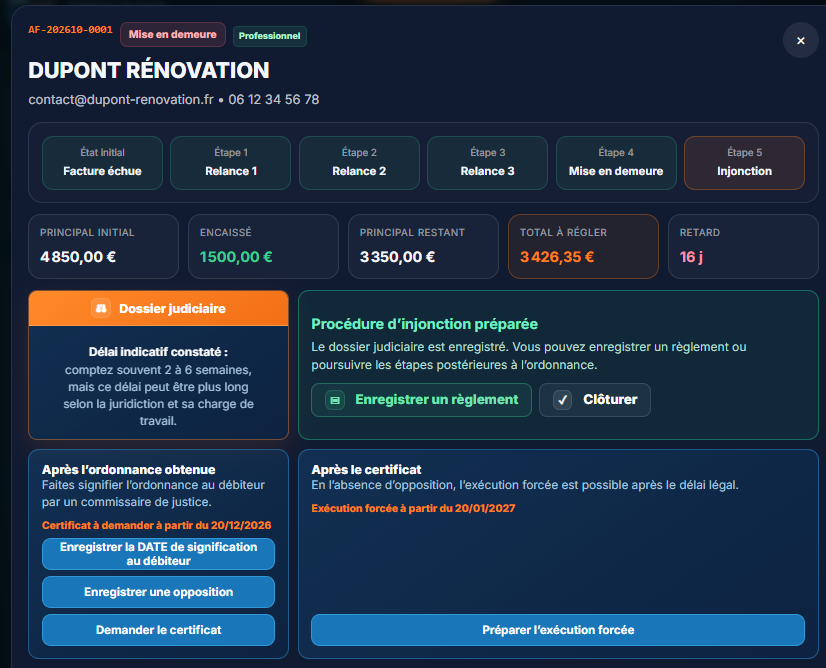
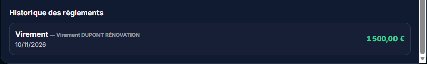
Une date enregistrée.
Les prochaines échéances sont calculées.
Après la signification, Axe Flow conserve le calendrier du dossier : certificat de non-opposition, puis exécution forcée.
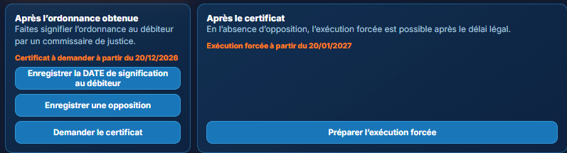
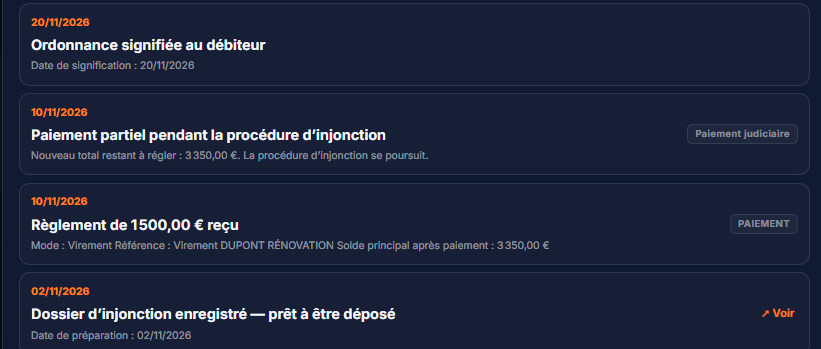
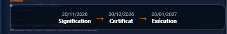
Le délai est passé.
Le certificat est préparé.
Axe Flow indique quand agir et prépare la demande de certificat de non-opposition avec les informations du dossier.
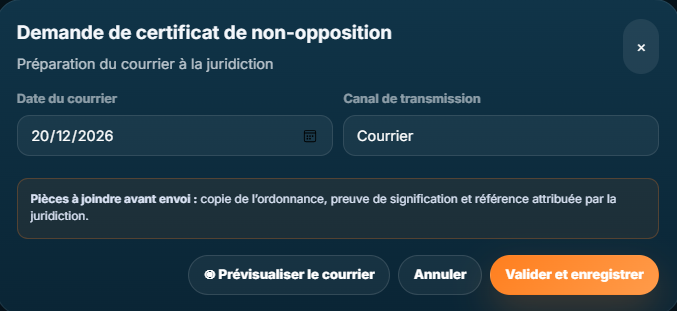
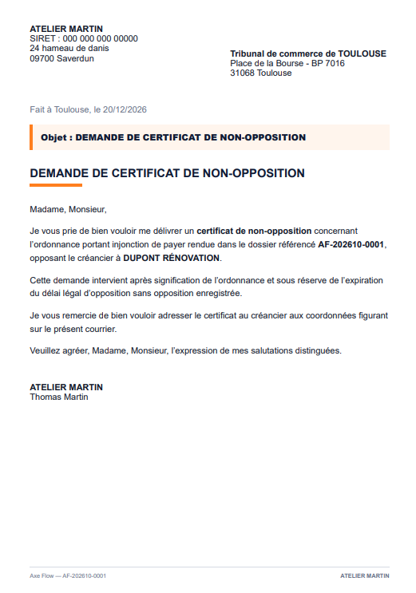
Le parcours va jusqu’au bout.
La transmission est préparée.
Email ou courrier, coordonnées de l’étude et pièces à transmettre : Axe Flow guide encore la dernière étape du dossier.
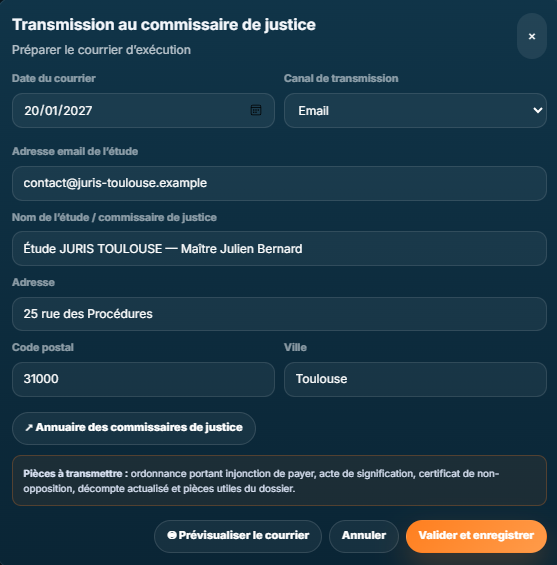
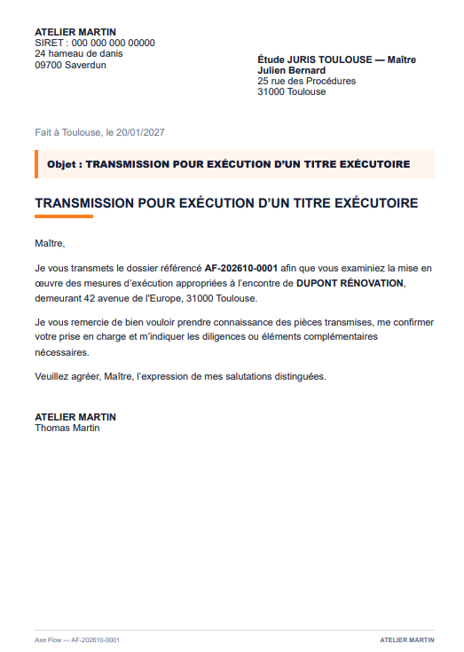
Vos impayés ne devraient pas devenir
votre deuxième métier.
Axe Flow vous indique quoi faire, quand le faire et conserve tout le dossier au même endroit.
Découvrir Axe Flow →